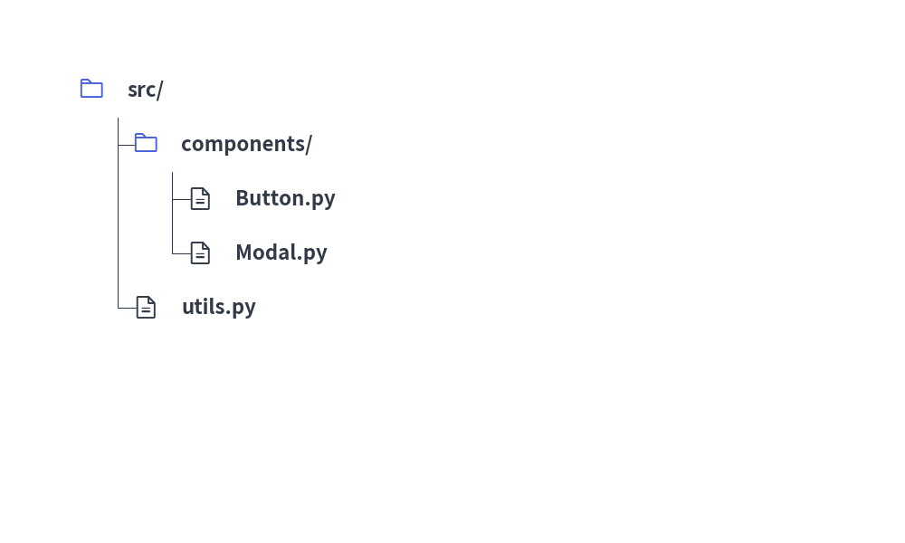

Tree Component
The TreeNode component renders hierarchical tree structures, such as codebase directory trees, organizational hierarchy charts, and taxonomy categorizations.
It automates vertical branch alignment, indentation levels, and tree connector lines.
1. Quick Example: Project Directory Hierarchy

2. Geometry, Lifecycle & Coordinate Mechanics
- Top-Left Anchor
(x, y): The coordinate passed toroot.draw(xy=..., *, scale: float = 1.0)represents the top-left corner of the root node text. Passingscaleproportionally scales indentation, vertical spacing, icons, and text sizes relative toxy. - Downward & Rightward Flow: Sub-directories and files branch downward and indent horizontally to the right.
- Visibility (
show: bool = True):- Both
TreeNode(text, ..., show: bool = True)andnode.add(child, *, show: bool = True)control node visibility. - Setting
show=Falsehides the node, its incoming branch line, and its subtree while preserving the exact vertical Y-coordinates of all subsequent sibling nodes.
- Both
- Root Node Style & Margin Requirements:
When instantiating the rootTreeNode, both styles and all three layout spacing arguments must be configured (child nodes inherit them automatically via cascading):text_style: Default text style for node labels.line_style: Default line style for tree branch connectors.line_horizontal_margin: Horizontal gap between parent label and vertical connector line.line_horizontal_length: Length of the horizontal tick connecting to child nodes.line_vertical_margin: Vertical row spacing between adjacent items.
3. Registering Icons (register_drawing_item)
You can attach vector icons or visual badges to tree items using register_drawing_item:
TreeNode.register_drawing_item(
name="custom_badge",
location="before", # "before" or "after" the label text
padding_width=4.0,
function=phosphor.file_code,
style=Styles.AccentFlat,
args={"width": 3.5},
)
# Apply to node
node = TreeNode("config.yaml").set_drawing_item("custom_badge")